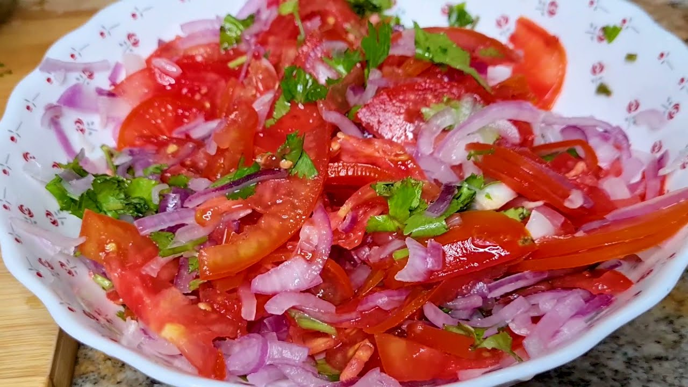

Kachumbari, Kenyan salad

Ingredients
- 2 large tomatoes, diced
- 1 medium red onion, thinly sliced
- 1 green chili, finely chopped (optional)
- Juice of 1 lemon
- Salt to taste
- Fresh coriander leaves, chopped (optional)
Steps
- In a bowl, combine the diced tomatoes and sliced onion.
- Add the chopped green chili if using.
- Squeeze the lemon juice over the mixture and season with salt.
- Toss everything together gently.
- Garnish with fresh coriander leaves if desired.
- Serve immediately as a side dish or salad.
Home